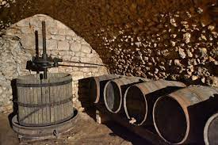
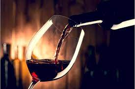

El proceso
Las uvas se colocan en la prensa y luego en la estrujadora para extraer el mosto. En la bodega, el resultado de estrujado y prensado se guarda en barricas de acero inoxidable.
Posteriormente se añade levadura para que la azúcar del mosto se convierta en alcohol. A este proceso se le llama fermentación.
El proceso de fermentación se somete a constantes y continuados controles, y experimentos para mejorar la calidad del vino tinto. Esto se hace tomando muestras del mosto, y mezclándolo con diferentes tipos de levadura.
La temperatura
Otro de los puntos esenciales en el proceso de elaboración del vino tinto, es la temperatura de la fermentación.
En la barrica de acero inoxidable donde se desarrolla el proceso de la fermentación el control de la temperatura es fundamental.
El vino tinto debe de fermentar a una temperatura de entre 30º a 35 º. El tiempo de fermentación en este tipo de vino es de 10 días.
La elaboración del vino tinto exige un paso más: durante la fermentación hay que drenar el tanque para airear el vino. El oxígeno ayuda a la levadura a trabajar más rápidamente en la fermentación.
Los controles
También se controla el nivel de azúcar ya que, durante el proceso, cuando baja el nivel de azúcar, sube le nivel de alcohol.
La fermentación esta lista cuando prácticamente no queda azúcar y el nivel de alcohol para el vino tinto se sitúa entre el 11% y el 13%.
Posteriormente el bodeguero bombea el vino a la barrica para que se mezcle bien. El vino se almacena durante unos meses, y posteriormente se filtra para eliminar partículas.
El embotellado
Por último, llega el proceso del embotellado bien de forma totalmente automatiza, manual o una combinación de ambas.
La clave del embotellado es evitar que, entre el oxígeno en la botella, porque este agria el vino. El color de la botella(oscuro) ayuda a conservar el vino, ya que la luz puede afectar al sabor del vino.
La utilización de corcho en el tapón del vino está determinada por que ese elemento, sella herméticamente la botella evitando que entre aire.
Dentro de la botella el vino sigue experimentado cambios a medida que envejece.
El vino tinto está elaborado a partir de uvas tintas (a veces con inclusión de alguna proporción de uvas blancas), y fermentado en presencia de los hollejos. Presenta color variable entre rojo guinda y negro azulado.
Los tipos de uva para vino tinto más destacadas son: Tempranillo, Garnacha Tinta, Graciano, Mencía, Monastrell, Cariñena/Grazuelo, Cabernet Sauvignon, Merlot, Pinot noir, Syrah.
El vino tinto, en función del tiempo de envejecimiento que tenga en la barrica y en la botella, obtendrá una categoría distinta. De esta manera podemos encontrar vinos jóvenes, vinos crianzas, vinos reservas o grandes reservas.